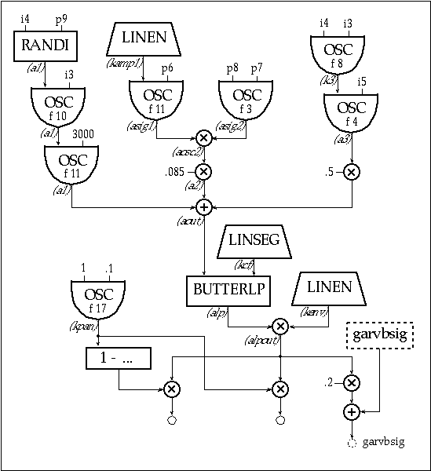

I am an Ambient music composer
who is fascinated with the history of computer music. I have composed
many albums of both Ambient and experimental electronic music
using a variety of synthesizers, samplers and outboard effects,
but I have had this interest in composing a piece of music that
would be created entirely in the computer — no samplers,
no analog synths, no external digital signal processing (DSP)
and no drum machines — just my computer, a soundcard, a DAT
machine and me. This work would travel a path directly from my
computer straight to the listener’s ears, mediated only by
an invisible layer of bits.
When this idea first germinated
around a year and a half ago, I became more and more intrigued
with it. My original plan was to use TurboSynth, ProTools
and Soundhack as some of my tools, but that plan was redirected
by a meeting I had with a Csound composer who helped inspire a
radical change in my focus.Around the same time as that meeting,
I was experiencing another shift: I no longer felt compelled to
work in the Techno Ambient genre but instead wanted to chart a
different course. I wanted to create work that drew upon my technical
background in audio, my interest in computer languages and my
readings in media criticism. While being pulled in this oblique
artistic direction, my interest in learning Csound had been rekindled.
It was not until I compiled a few Csound examples, that I realized I had found the system that would help me accomplish my goals, and that Csound would give me access to many different tools with which to work. Through mastering the fundamentals of Csound I have finally been able to sculpt Ambient soundscapes in an environment made from little more than cold silicon and code.
I have been asked to write an
Ambient Csound piece for this book and to chronicle my progress.
Given my interest in grafting the synthesis techniques found in
early computer music onto an emergent new sound in Ambient music,
this project would help me develop my work in this area, while
having an interesting journey to share with others who are being
introduced to Csound.
"The meta-designer creates
context, not content"
— Gene Youngblood
"The medium is no longer
the message, the tool has become the message"
— Kim Cascone
I have had the privilege of growing
up alongside the evolution of electronic music. I saw the late
sixties become dominated by the shocking newness of "computer
culture," and I reveled in the new electronic sounds that
this era ushered in. I can safely say that I never had to work
at developing a taste for electronic music: the more synthetic
the sound, the more I liked it. My first experience of being transported
by electronic music was while sitting in a theater watching the
film "Forbidden Planet" — the soundtrack by Louis
and Bebe Barron probably shaped my vision of creating a sonic
space more than any other experience.
As a child, most of my exposure
to synthetic sounds was through pop music and television. In the
late 60's, a few television stations nurtured a climate of experimentation
and let their engineers run amok with new technologies. Typically,
this experimental video work was accompanied by an electronic
music soundtrack, and a good example of this was a project called
"Limbo," which aired in 1968 on WCBS-TV. The soundtrack
was a stark, alien-sounding, electronic score that also made a
deep impression on me. Later, while a student at the Berklee College
of Music, I was exposed to many different ideas about music, but
it was the electronic music classes I took there that helped me
develop a different way of hearing and altered my process of organizing
sound.
Although I had been working with analog synthesizers, I did not
begin working with computers until after my studies at Berklee,
when I became a student of electronic circuit theory in night
school. I had realized my dream of owning a synth by building
my own analog modular synthesizer from kits. Shortly afterwards,
I needed a sequencer for a piece I was working on (mind you this
was 1978 - pre-MIDI) but analog sequencers were still prohibitively
expensive. I had heard from a friend that a KIM-1 microcomputer
could be programmed to behave like a sequencer. After buying a
KIM-1, I started studying 6502 assembly language, and after many
weeks managed to write a crude sequencer. My little sequencer
program spit out 8-bit words to the input and output (I/O) ports,
which were fed to a digital-to-analog-converter (DAC) that controlled
my synth's oscillators — this was my first entry into computer
music.I have also been very interested in environmentally altered
sounds.
I remember as a child becoming
quite entranced by the shifting cascade of harmonics a distant
propeller plane created while I was taking a bath in my reverberant
tile bathroom. It was at this time that I became highly aware
of the phenomenon of sound filling space while defining it. I
have consciously striven to recreate that sound in my work. I
find the idea of creating an electronic space that transports
the listener into their own space very compelling. In this way
"space" transforms into "place" for the listener.
In most of my work with electronic music over the past ten years,
I believe I have accomplished this effect with varying degrees
of success.
"Often the hardware technology
of the 90's uses the software technology of the 70's and 80's
to realize the musical concepts of the 60's. That is the rub."
— Paul Berg, Computer Music
Journal (20:3)
In my experience of having operated
a record label that released Ambient, Techno and experimental
music, I often encountered younger artists fetishistically collecting
analog synthesizer gear from the 70's & 80's, recreating sounds
from an era of electronic music they remember from childhood.
While it satisfied some nostalgic need for them, they often used
these sounds without knowing anything of their history. Concerned
with this lack of depth, I focused my efforts on understanding
the history of synthetic sounds from a grammatical point of view,
and began resurrecting sounds developed by early electronic and
computer music composers. In my last release titled "Anechoic,"
(Silent Records SR9599) I spent many days in my studio designing
synth patches that were similar to a group of historical synth
sounds I wanted to cite in my work. I used classic techniques
such as sample and hold, FM, noise band glissandos, ring modulation
and vocoding in order to lift a certain number of elements from
works, objects, pre-existing messages, and to integrate them in
a new creation in order to produce an original totality manifesting
ruptures of diverse sorts.In my current work, I am focusing on
resurrecting the historical vocabulary of computer music, and
embedding it in an Ambient context.
One source of information that helped establish a schematic for
my work is Jean-Claude Risset's "Introductory Catalogue of
Computer Synthesized Sounds" (1969). Not only did this provide
me with a working schematic of historical instruments and techniques,
but also presents an interesting device with which to frame these
ideas: the catalogue. This method of identifying objects (in this
case software objects functioning as instruments) seems to be
overlooked by those searching for new forms of context. Risset's
catalogue serves the dual purpose of tutorial and artistic statement:
bringing others to a level of understanding by openly displaying
the inner workings of his instruments with examples of code and
schematics of unit generators.
Although many composers working in the field of computer music
probably do not share my interest in recycling early computer
synthesized sounds, there is an emergent school of composers who
are concerned with similar aesthetic issues. This group of composers
are on the fringe of the Techno Ambient movement and have created
a new climate of experimentation by working with digital audio
tools such as MQ analysis, phase vocoding, spectral mutation,
and granular synthesis. The result has been the generation of
a new vocabulary which casually borrows from the historical sonic
reservoir of computer music. This new breed of electronic musicians
are hacking new forms of experimental Ambient music by reaching
down to its "atomic" level and tweaking the fabric of
sound. This is an important movement that combines academically
developed synthesis techniques, street culture usage and a deconstructionist
aesthetic.
The philosophy behind Ambient
music can best be described as an open system of organizing sound
which when listened to stimulates a resonance in the listener,
thereby inducing a trance-like state. When creating Ambient music,
a non-formal method of "composition" comes into play.
The success of this method is reliant on the composer's ability
to create an experience in which the listener imposes an organized
structure on seemingly static material. A similar psychoacoustic
phenomenon happens to people who travel on jet planes: some people
report hearing "music in the Ambient noise of the plane."
A similar effect can happen while listening to Ambient music.
Rather than assigning a musical value to the material, the listener
assigns a visual value, one usually conjured from personal experiences
and fantasies. Creating music that achieves this effect is problematic
because there are few historical models to work from. This way
of organizing sound is mostly an intuitive process that has grown
out of recycling familiar and established patterns found in other
Ambient works. This method of creation is wide spread throughout
electronic media and its best example is the rock musician who
doesn't know what a I-IV-V progression is, but can write a hit
song with a pop structure (A-A-B-A, etc). using three chords.
This is similar to speaking a language, yet not knowing its formal
grammar. It is a type of pattern emulation that we use for survival.
Contemporary Ambient music is created from this sort of pattern
emulation, and usually does not start with a preconceived structure,
per se. The process typically starts with a palette of
sonic textures that, when played, will suggest a structure.I start
my compositions in a similar fashion by creating a library of
patches on various synths and/or samplers, playing those sounds
with a keyboard, and when these textures start to reveal melodic
or harmonic ideas, I record them into a sequencer. After recording
several tracks of ideas, I massage this raw data into final form
by stretching and pulling it into a coherent structure using editing
tricks, fades, panning, instrument doubling, transposition and
time scaling. In essence, tweaking the material until the "resonance"
effect takes place.
"One of the motives for
being an artist is to recreate a condition where you're actually
out of your depth, where you're uncertain, no longer controlling
yourself, yet you're generating something, like surfing as opposed
to digging a tunnel. Tunnel-digging activity is necessary, but
what artists like, if they still like what they're doing, is the
surfing."
— Brian Eno ("Aurora
Musicalis". ArtForum Magazine. 24:10. 1986)
Before I started designing my
Ambient piece in Csound, I spent many hours listening to my computer
music collection. I compiled many Csound examples, and I made
copious notes about what sounds or synthesis techniques appealed
to me. I then listened to some of my own work and made notes about
what type of synthesis I tended to gravitate towards. While designing
the Csound instruments for "blueCube," I had to alter
my creative process: instead of just digging through my gear closet,
hooking up some synths and finding the appropriate patches, I
now had to think in terms of synthesis theory, programming, and
instrument design in order to start constructing a piece.
Instead of "knob twiddling," I have come to view the
process of composing with Csound as "code twiddling."After
studying the manual for a few weeks and working through the tutorials,
I managed to get the basic syntax of Csound down without much
problem. I started studying instrument design by taking other
composers’ instruments and drawing them out on paper in flowchart
form. I took the scores and isolated a particular instrument by
commenting out all other instruments except the one I wanted to
listen to. I would then start to modify that instrument in various
ways so I could hear the effect my code was having. I recreated
some of these instruments in a visual programming environment
called Patchwork, and then compiled them to see if the
resulting code matched the original instrument code. While flowcharting
and studying these instruments and scores for a few weeks, I took
the opportunity to refresh myself on various synthesis techniques
by reading through key books on computer music. I also started
studying some of the instruments from the Amsterdam Catalog
of Csound Computer Instruments and modified some of them,
in order to explore their range of possible sounds.
My plan was to design two types
of instruments for "blueCube": instruments that resembled
patches I have designed on analog synths for use in previous work,
and instruments that imitate historical computer music sounds
which could also work in an Ambient music context. I found that
as I wrote my code I could build the instrument I was working
on little by little, adding new ideas as I went along. It was
easier to work on my instruments as individual files in order
to explore my ideas quickly and isolate the instrument from others
so I could better hear what I was developing. Once I got the instrument
tweaked to my liking, I pasted it into the main .orc file and
commented my code extensively so I could come back to it later
on and know what was going on. On hearing the instrument played
in musical context, I would then make changes in order to balance
it in the piece. The score developed simultaneously as I added
sections of note events and parameter fields (p-fields),
in order to try out new ideas and experiment with different opcodes.
This process of composing with a standard numerical score was
similar to creating a piece in MIDI by entering all the values
into the event editor of a sequencer. It is no wonder that many
early computer music pieces were under 5 minutes in length!
One of the first instruments I
started developing was based on Jean-Claude Risset's "Drum
Instrument." This instrument appealed to me for a few reasons;
1) it could generate a wide range of interesting sounds from a
simple design — perfect for someone on the learning curve,
2) the instrument contained sub-instruments that performed various
synthesis techniques and 3) it was modular, which meant that I
could modify or swap out these sub-instruments in order to mold
it to my aesthetic needs. After making a few modifications, my
first instrument combined additive synthesis, noise filtering,
ring modulation, and a sinewave oscillator. Since each one of
these techniques is historically associated with electronic and
computer music, this was a good choice to start with.
|  |
| instr 1 | |||
| i1 | = | p5*.3 | |
| i2 | = | p4*.98 | |
| i3 | = | 1/p3 | |
| i4 | = | p5*.6 | |
| i5 | = | p4 | |
| kfreq1 | = | p6 | |
| kfreq2 | = | p7 | |
| kamp2 | = | p8 | |
| ;1 Noise Branch | |||
| a1 | randi | i4, p9 | |
| a1 | oscil | a1, i3, 10 | |
| a1 | oscil | a1, 3000, i1 | |
| ;2 RM Branch | |||
| kamp1 | linen | kamp2, p3*.2, p3, p3*.2 | |
| asig1 | oscil | kamp1, kfreq1, 11 | |
| asig2 | oscil | kamp2, kfreq2, 3 | |
| aosc2 | = | asig1*asig2 | |
| a2 | = | aosc2*.085 | |
| ;3 Low Sine Branch | |||
| k3 | oscil | i4, i3, 8 | |
| a3 | oscil | k3, i5, 4 | |
| a3 | = | a3*.5 | |
| iamp | = | p8*.4 | |
| aout | = | a1+a2+a3 | |
| kcf | linseg | 0, p3/2, 850, p3/2, 0 | |
| kpan | oscil | 1, 0.1, 17 | |
| alp | butterlp | aout, kcf | |
| kenv | linen | iamp, p3*.8, p3, p3*.2 | |
| alpout | = | kenv*alp | |
| outs | alpout*kpan, alpout*(1-kpan) | ||
| garvbsig | = | garvbsig+(alpout*.2) | |
| endin |
Sample and Hold
I have always been fond of the
effect created by a Sample and Hold (S/H) controlling a sine wave
oscillator. It indexes electronic music from the 60's and is also
a sound effect often used in Hollywood films when describing what
computers (complete with banks of blinking lights) sounded like.
In addition to its ability to conjure visions of IBM 360 mainframes,
by adjusting the clock rate on the S/H you can create the classic
"babbling brook" effect, by feeding the S/H output to
a resonant filter in a state of near oscillation. This was easy
enough to implement with the samphold
opcode. My instrument then contained the two qualities I was looking
for: historical indexing and versatility.
|
| instr 2 | ||
| krt | = | p6 |
| isd | = | p4 |
| krnd | randh | 1000, krt, isd |
| kclk | oscil | 100, krt, 14 |
| ksh | samphold | krnd, kclk |
| a2 | oscil | 600, ksh,11 |
| a3 | oscil | a2, 1/p3, 10 |
| kpan | oscil | 1, .04, 17 |
| asig1 | = | a3*kpan |
| asig2 | = | a3*(1-kpan) |
| outs | asig1, asig2 | |
| garvbsig | = | garvbsig+(a3*.2) |
| endin |
I once visited the studio of a
computer music composer back in the late 70's who had a Synclavier.
When I walked into his studio he was playing a piece he had been
working on that utilized the technique of Frequency Modulation
(FM). The sound resembled those reverberating harmonics I had
heard as a child. Ever since that experience I have been fascinated
with the rich palette of sounds that can be created by using FM.
This was the next method of synthesis I chose to work with, and
I started by designing a simple FM instrument using the foscili
opcode. I wanted to create an ornamental sound that made use of
a backwards envelope and a constant intensity pan.
 |
| instr 3 | ||
| kcps | = | p4 |
| kcar | = | p5 |
| kmod | = | p6 |
| kpan | = | p7 |
| kndx | = | p8 |
| kamp | = | p9 |
| krvb | = | p10 |
| afm | foscili | kamp, kcps, kcar, kmod, kndx, 11 |
| afm1 | oscil | afm, 1/p3, 18 |
| afm2 | = | afm1*400 |
| krtl | = | sqrt(2)/2*cos(kpan)+sin(kpan) |
| krtr | = | sqrt(2)/2*cos(kpan)-sin(kpan) |
| al | = | afm2*krtl |
| ar | = | afm2*krtr |
| outs | al, ar | |
| garvbsig | = | garvbsig+(afm2*krvb) |
| endin |
A classic effect used often in Ambient music. This type of sound was used a lot in European electronic music in the 70's. It conceptually combined the effects of filter sweep and repetitive quality of echoes, but instead of decaying into the mix, these effects created an "ornamental" sort of texture. I implemented this with a noise sound source, which I filtered and used an exponential envelope on, and then filtered again using the reson opcode to achieve the filter sweep effect. To augment this effect, I added some panning to create movement and a delay, in order to create a "call and answer" type of effect.
| instr 4 | ||
| aclk | = | p3*4.3 |
| apls | oscil | 5000, aclk, 2 |
| abp | butterbp | apls, 2500, 200 |
| abp | = | abp*3 |
| anoise | oscil | abp, aclk, 8 |
| kswp | line | 1800, p3, 180 |
| afilt | reson | anoise, kswp, 20 |
| afilt2 | oscil | afilt, 1/p3, 10 |
| kpan | line | 0, p3*.8, 1 |
| afilt2 | = | afilt2*.05 |
| outs | afilt2*kpan, afilt2*(1-kpan) | |
| garvbsig | = | garvbsig+(afilt2*.02) |
| gasig | = | gasig+(afilt2*.6) |
| endin |
Delay is an important tool in
the studio. Not only is it used to stretch the envelope of a sound
event by creating a lingering persistence of it, but it can also
be used to create interesting stereo effects by panning the delayed
and dry signals to opposite sides of a mix. I created a plain
vanilla global delay that I used primarily for the clicky filter
sweep instrument. I have also used the delay embedded within an
instrument, and implemented a controlled feedback loop in order
to create echoes. Delay and reverb are both important effects
used in Ambient music to define a space while the sound fills
that space. Delays can be configured to perform many sophisticated
functions, but in this piece I used it in a similar manner to
how I would use a digital delay unit in my studio.
The problem with asig*kpan,
asig*(1-kpan) type of panning is that it leaves the proverbial
"hole in the middle" when it comes to panning, so I
started doing a little research into other formulas that would
achieve a more constant intensity type panning. I found some formulas
in a few of the computer music books I used for research, and
used the following constant power panning formula:
| krtl | = | sqrt(2)/2*cos(kpan)+sin(kpan) |
| krtr | = | sqrt(2)/2*cos(kpan)-sin(kpan) |
Lowpass filter sweeps never seem
to go out of vogue, and they have been in heavy use again by current
Ambient Techno musicians. Filter sweeps started to enter the pop
lexicon when Moog synthesizers began being played by rock musicians
in the psychedelic rock bands of the late 60's. This style of
music introduced westerners to trance-inducing dronescapes that
musicians would improvise over with exotic scales. In essence,
the filter sweep became western culture's Tamboura instrument.
Compositional structure and sonic surface became intertwined.
Some of the most elegant uses of this technique can be found in
Tangerine Dream's masterpiece "Rubycon." This record
could almost serve as a catalog of sounds that shaped electronic
music in the mid 70's. I have made extensive use of this effect
in my work, partly as an attempt to recreate that "shifting
cascade of harmonics" I heard as a child.
In order to recreate this effect
in Csound I started experimenting with the reson
opcode, but found that I had difficulty getting the exact effect
that I wanted. I was not getting the quality of filter sweep I
was looking for, because the reson
opcode implements a bandpass filter function, but with some tweaking
and layering of sounds, I ended up using the reson
opcode for most of my filter sweep work.
In order to see for myself how
the reson
opcode behaved with white noise being fed into it, I wrote some
code that would allow me to see what the frequency response looked
like, by taking "snapshots" of the filter’s output
using the dispfft
function, while sweeping the filter downward. Additionally, I
experimented with plugging in other values into the bandwidth
argument to see how this would affect the filter function.
 |
| instr 5 | |||
| anoise | randh | 2000, 20000 | ;white noise |
| kline | line | 2000, p3, 0 | ;sweep for filter |
| afilt | reson | anoise, kline, 75 | ;bandwidth is 75Hz |
| abal | balance | afilt, anoise | ;this controls peaking |
| abal | = | abal*2 | |
| out | abal | ||
| dispfft | abal, .5, 4096 | ||
| endin |
| i1 | 0 | 5 |
The noise band glissando is the
quintessential computer music instrument from the 60's. In the
following implementation of the instrument, I have chosen to sweep
the bandwidth of the noise instead of the oscillator’s frequency.
This modification was an experiment, which wound up providing
me with an aesthetically pleasing band of filtered noise, so I
decided to keep this instance of the instrument as is. I have
implemented another version of this instrument which uses the
classic noise-band glissando configuration: the frequency argument
of the randi
is given a constant value, and the frequency argument of the oscil
is swept with a linseg.
 |
| instr 6 | ||
| kfreq | = | p5 |
| kramp | linseg | 0, p3*.8, p4, p3*.2, 0 |
| kenv1 | linen | p4, 0, p3, 10 |
| anoise | randi | kramp, kenv1 |
| aosc | oscil | anoise, kfreq, 11 |
| kpan | oscil | 1, .09, 1 |
| aosc2 | reson | aosc, kpan+100, 100, 2 |
| outs | aosc2*kpan, aosc2*(1-kpan) | |
| garvbsig | = | garvbsig+(aosc2*.2) |
| endin |
I have found Csound to be an extensible
sound synthesis language, because its complexity has varied along
with the complexity of my needs and skills. It can either be approached
as an analog modular synthesizer, where unit generators are patched
together to create sounds, or it can be approached like a programming
language, by making use of program control and inline math to
perform these same functions. This provides a good entry point
for electronic music composers and programmers who are just getting
started, while it can continue to provide a rich environment to
work in.The most valuable part of my experience while composing
"blueCube" has been the growth I have encountered from
learning about myself as an artist.
Working on this piece presented
me with many problems to solve, as well as provided a tool with
which to help solve them. Throughout this process, I felt a little
like an alchemist who has finally been allowed to pursue his work
in a fully equipped laboratory. Along with this feeling of satisfaction
also comes the feeling that I will be a student of Csound for
a long time, exploring various synthesis techniques and discovering
new applications for them in my music. "blueCube" is
a small excerpt from a larger work I am working on. I hope to
have a CD of experimental Ambient material ready for release next
year.Along with the all technical work facing me, there is as
much work to be done on a critical level. There are important
aesthetic issues I need to work through, and I am eager to see
more critical discourse in the field of computer music. My hope
is that my attempt to preserve the historical potency of computer
music sounds by using them in a new context might help to stimulate
some discourse in this area.
Special thanks to Richard Boulanger,
Dave Phillips, Mike Berry, Rich Plom, Kathleen and Cage for their
encouragement and support during my morph from knob twiddler to
code twiddler.
Arveiller, Jacques. "Comments
on University Instruction in Computer Music Composition"
In The Music Machine ed. ed. Curtis Roads. Cambridge: MIT
Press, 1989.
Attali, Jacques. Noise - The
Political Economy of Music. Minneapolis: University of Minnesota
Press, 1985.
Dodge, C., and Thomas, J. Computer
Music: Synthesis, Performance and Composition New York: Schirmer
Books, 1985.
Ernst, David. The Evolution
of Electronic Music. New York: Schirmer Books, 1977.
Gather, John. Amsterdam Catalogue
of Csound Computer Music Instruments http://mars.let.uva.nl/gather/accci/index.html,
1995.
Risset, Jean-Claude. "Introductory
Catalogue of Computer Synthesized Sounds" and "My 1969
Sound Catalogue: Looking back from 1992" Historical CD
of Digital Sound Synthesis (Computer Music Currents 13). Germany:
Wergo, 1996.
Roads, Curtis. The Computer
Music Tutorial. Cambridge: MIT Press, 1996.
Toop, David. Ocean of Sound
— aether talk, ambient sound and imaginary worlds. London:
Serpents Tail, 1995.
Ulmer, Gregory L. "The Object
of Post Criticism" In The Anti Aesthetic — Essays
on Postmodern Culture, ed. Hal Foster. Port Townsend: Bay
Press, 1983.
Youngblood, Gene. Expanded
Cinema NewYork: E.P. Dutton & Co, 1970.
Boulanger, Richard. "Trapped
in Convert". Csound files.
Dodge, Charles. "Earth’s
Magnetic Fields". Nonesuch.
Heavenly Music Corporation. "Anechoic".
Silent.
"Historical CD of Digital
Sound Synthesis". V/A .Wergo.
"In Memorium — Gilles
Deleuze". V/A. Mille Plateau.
Microstoria."init ding".
Mille Plateau.
Microstoria. "snd".
Thrill Jockey.
Panasonic. "Vakio".
Blast First.
Randall, JK. "Mudgett: Monologues
of a Mass Murderer". Nonesuch.
Risset, Jean-Claude. "Sud.
Dialogues...". INA GRM.
Sonic Bloom. "Entropica".
Freezone/CrammedDiscs.
Tangerine Dream. "Rubycon".
Virgin.
Tenney, James. "Analog #1
(Noise Study)". Artifact Recordings.
Vercoe, Barry. "Synthesism". Nonesuch.